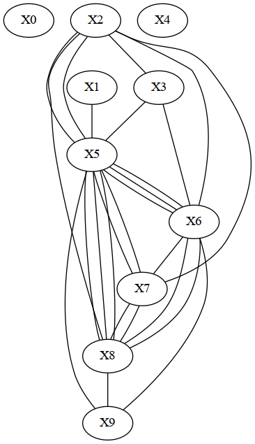
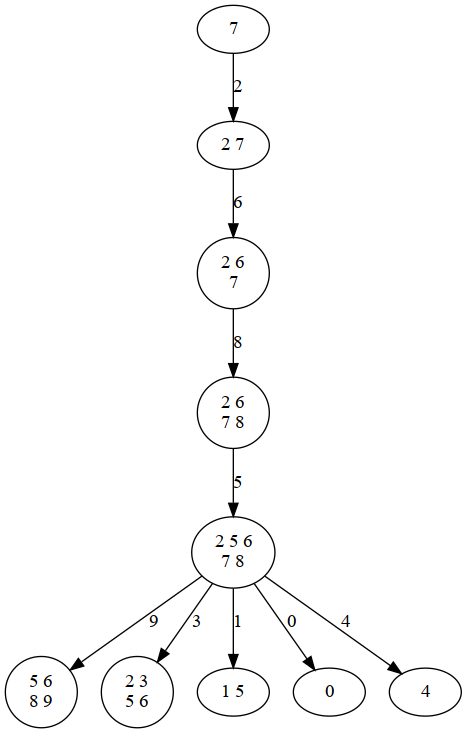
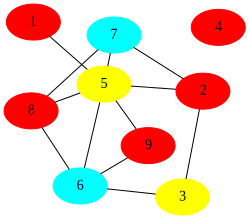
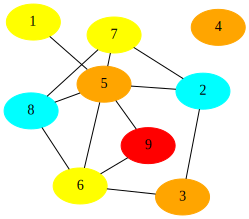

Online resources and software environment
This document is hosted online as Jupyter notebook with precomputed results. Download this file to view, edit and run examples in Jupyter.
We recommend to install all required software using Mamba (or Conda) and PIP.
mamba create -n infrared -c conda-forge infrared jupyter jupytext matplotlib seaborn graphviz
mamba activate infrared
pip install graphviz
mamba deactivate infrared
Start the Jupyter notebook server after activating the environment
mamba activate infrared
jupyter notebook
The original sources are part of the Infrared distribution and hosted on Gitlab (in Jupytext light Script format).
The graph coloring problem
As a toy example for the use of Infrared, we model (a small instance) of graph coloring. The graph coloring model defines variables for the graph nodes, whose possible values are the colors. Furthermore, we define inequality constraints for every edge, to ensure that connected nodes receive different colors in valid solutions.
This model is then extended by an objective function that counts the different colors in cycles of size four. From the model, we create an Infrared solver to find optimal solutions.
For instructional purposes, we furthermore show the dependency graph of the model and the tree decomposition used by the solver.
import infrared as ir
numcolors = 4
numnodes = 9
edges = [(1,5),(2,3),(2,5),(2,7),(3,6),(5,6),(5,7),(5,8),(5,9),(6,8),(6,9),(7,8)]
cycles = [(2,3,5,6),(2,5,7,8),(5,6,7,8),(5,6,8,9)]
Modeling in Infrared
Setup the model and construct a solver. Report the treewidth.
model = ir.Model()
model.add_variables(1,(0,0))
model.add_variables(numnodes,numcolors)
ir.def_constraint_class('NotEquals',
lambda i,j: [i,j],
lambda x, y: x!=y)
model.add_constraints(NotEquals(i,j) for i,j in edges)
ir.def_function_class('Card',
lambda i, j, k, l: [i,j,k,l],
lambda x,y,z,w: len({x,y,z,w}))
model.add_functions([Card(i,j,k,l) for i,j,k,l in cycles], 'card')
model.set_feature_weight(-1,'card')
solver = ir.Optimizer(model)
print(f'Tree width: {solver.treewidth()}')
Tree width: 4
Drawing the dependency graph of the model
Please ignore the dummy node 0 - we don't suppress it to keep things simple. Otherwise, the dependency graph is identical to the input graph as specified above.
from IPython.display import Image
import re
filename = 'dependency_graph.dot'
model.write_graph(filename, True)
ir.dotfile_to_png(filename)
filename = re.sub(r"dot$","png",filename)
Image(filename=filename,width=300)

Plotting the tree decomposition
This shows the tree decomposition of the dependency graph that is internally generated by the solver as basis for the efficient computation.
filename="treedecomp"
solver.plot_td(filename,'png')
Image(filename=filename+".png",width=400)

Interpreting assignents (as colorings)
Conversion of assignments to coloring dictionaries
Note that the engine returns solutions as (variable to value) assignments. Since the interpretation of such assignments is typically problem-specific, it is left to the user. To display it, we translate the assignment into a printable dictionary (and remove the dummy variable).
def assignment_to_coloring(a):
colors=["red","cyan","yellow","orange","magenta","green","blue","grey"]
coloring = {i:colors[v] for i,v in enumerate(a.values())}
del coloring[0]
return coloring
Generating colorings
Retreiving a best coloring
solver = ir.Optimizer(model)
best_assignment = solver.optimize()
best_coloring = assignment_to_coloring(best_assignment)
print('Optimal coloring:', best_coloring)
print('Colors in cycles:', model.eval_feature(best_assignment,'card'))
Optimal coloring: {1: 'red', 2: 'red', 3: 'yellow', 4: 'red', 5: 'yellow', 6: 'cyan', 7: 'cyan', 8: 'red', 9: 'red'}
Colors in cycles: 12
Sampling of colorings
Use the weight to control 'optimality'
model.set_feature_weight(0,'card')
solver = ir.Sampler(model)
assignment = solver.sample()
coloring = assignment_to_coloring(assignment)
print('Sampled coloring:', coloring)
print('Colors in cycles:', model.eval_feature(assignment,'card'))
Sampled coloring: {1: 'yellow', 2: 'cyan', 3: 'orange', 4: 'orange', 5: 'orange', 6: 'yellow', 7: 'yellow', 8: 'cyan', 9: 'red'}
Colors in cycles: 13
Plotting colorings
def plot_coloring(coloring):
import graphviz
G = graphviz.Graph('coloring', engine="fdp")
for i in range(1,numnodes+1):
G.node(f'{i}', style="filled", color=coloring[i])
for i,j in edges:
G.edge(f'{i}',f'{j}')
return G
print(cycles)
plot_coloring(best_coloring)
[(2, 3, 5, 6), (2, 5, 7, 8), (5, 6, 7, 8), (5, 6, 8, 9)]


 1.9.4
1.9.4